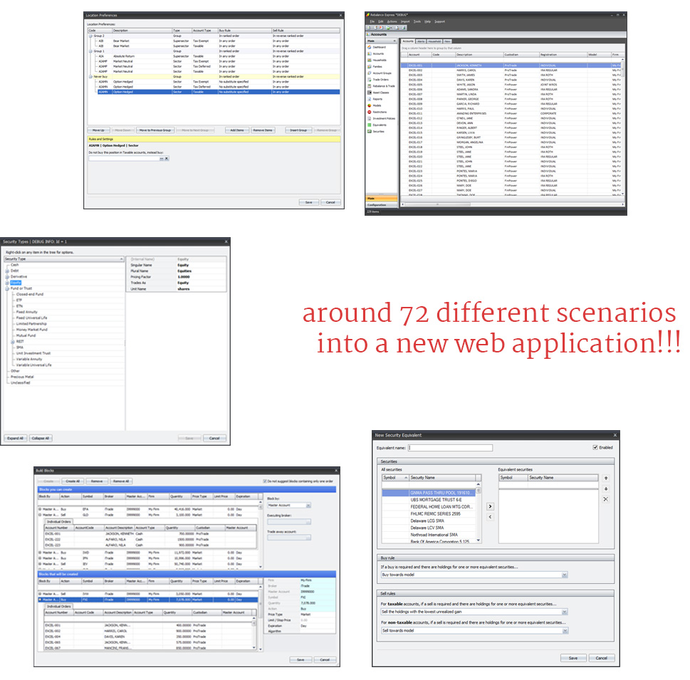
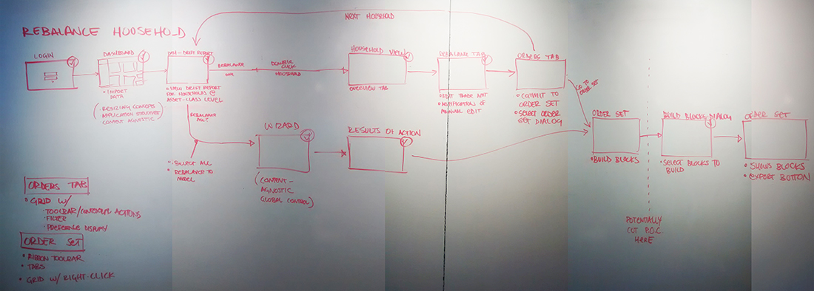
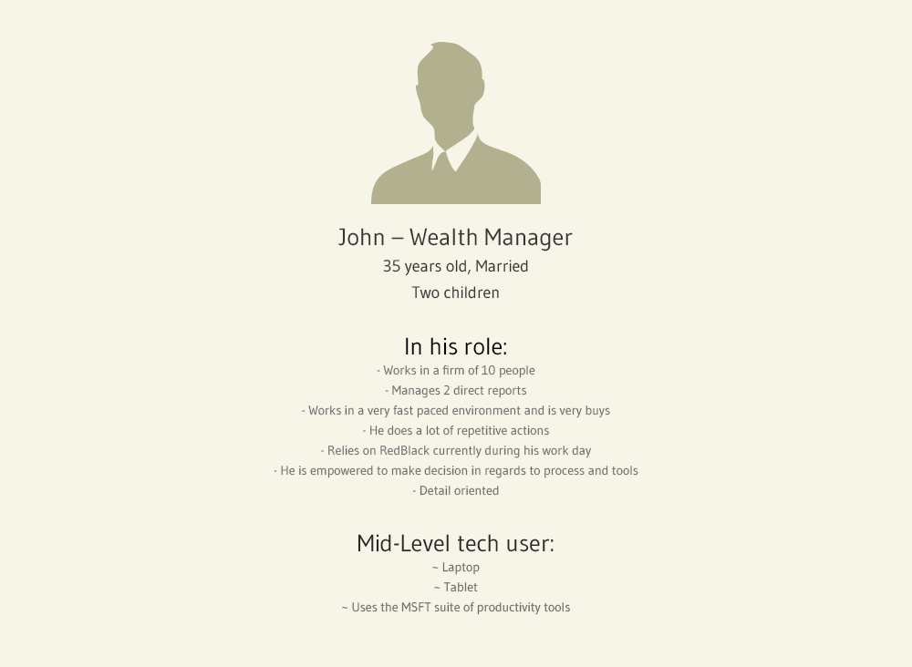
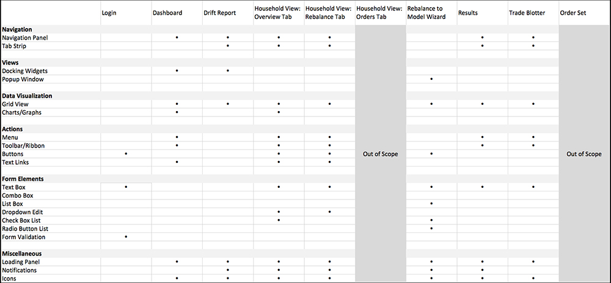

RedBlack is the independent market leader in investment management solutions for rebalancing, trading, order management, trade compliance and FIX integration. Their solutions are sought after by asset management firms, wealth managers, registered investment advisors, family offices, brokers, banks and trust companies.
We got a 2 days introduction about the product from the stake holders and their sales team. We came to know about their main purpose is to increase user base, reach more users and reduce the complication of onsite support. They already have a complex desktop application running successfully but lack user experience and proper user flow and design.
Our goal is to provide a design language that is unique and refined, it reflects the brand benefits, attributes and communicates clearly to the users the core values: intuitive, reliable, innovative and powerful.
Luckily it was that time of the year in Seattle, the drizzling has stopped and the summer shining great. The design team use to sit and went through each and every requirements and pain points. We drew out a lot of flow charts and always ended up with more questions each time.
This project is focused on the Investment Advisor. An investment advisor is defined by the Securities and Exchange Commission as an individual or a firm that is in the business of giving advice about securities.
Luckily we had chance to meet some hardcore users as soon as the project got started, so we started formulating proper plans and user flows. We come to end our meetings with proper conclusions. Great and we straight away started information architecture and wire framing phase.
We created personas and identified problem statements. This was the foundation for the website's direction. It also gave us material for an idea generation session with the rest of the team.
The problems were fleshed out into problem statements which in turns acted as requirements for the new website. The problems statements were divided into these 4 catergories
We identified a common taskflow to represent the Rebalancing process: rebalancing households that have drifted at the asset class level.
This workflow was chosen not only because it is a common task, but because it covers many of the key screens, interactions, controls and UI elements throughout the entire app. Many of these elements are quite complex, so solving this workflow early on will greatly benefit the project.
This workflow covers a great deal of interaction paradigms and controls, as shown in the table below.
We took the initial brand visual language and looked at how we could enhance it.
We added a few colour shades to brand guidelines to make them more flexible. We still needed to define suitable secondary colour palette however we wanted to wait till later down the line when the site design was more defined.
We took the enhanced visual language and started to explore by designing components, to give the stakeholders a feel for how the site could start to look.